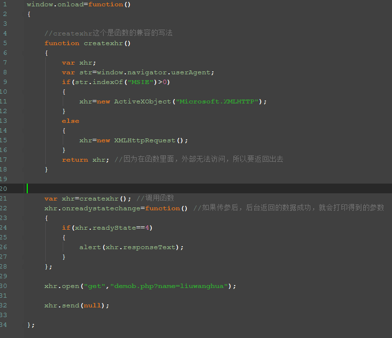
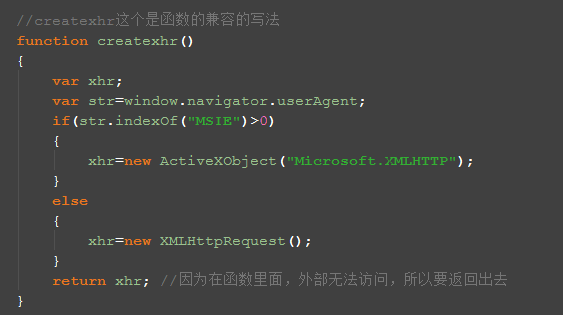
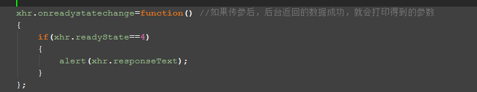
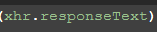
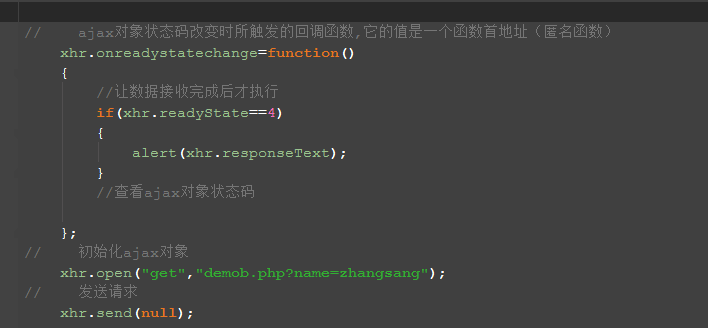
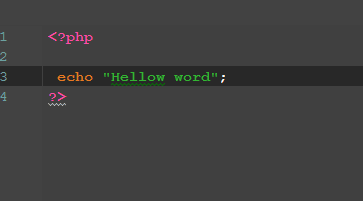
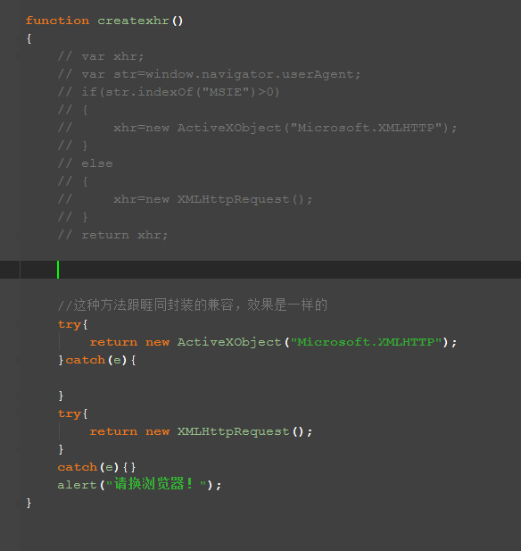
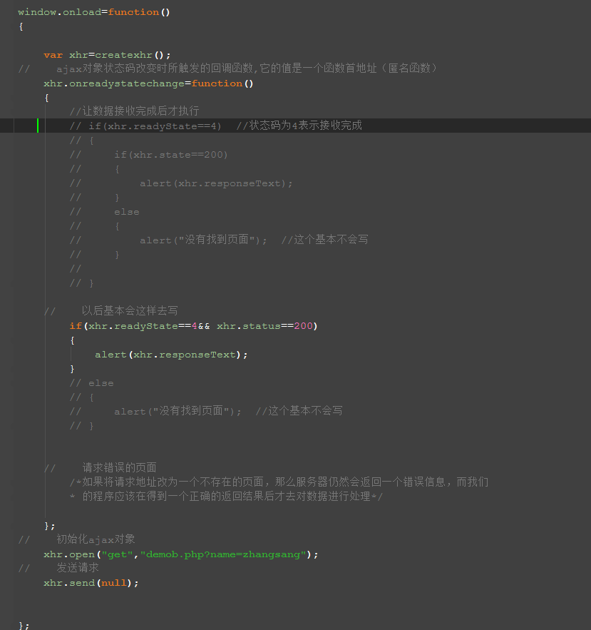

GET请求方式：
先看整体写法：
这处是各个浏览器获取AJAX对象的兼容写法：
这里要是符全状态的情况下，才会从服务器返回数据
这个是回调：
这个是PHP后台
- 回调后的值:
- AJAX的状态码
- 0：表示对象己经建立，但未初始化，就是没有调用open()方法
- 1：表示对象己经初始化，但未发送，也就是己经调用open()方法，但是没有调用send()发送方法
- 2：表示已经调用send()方法进行请求，也就是向服务器发送请求，发送数据
- 3：表示服务器正在接收数据（接收到一部分），也可以说正在接收响应
- 4：接收数据完成
-
- statusText ajax对象接收到的http响应状态文本 如：OK not found
- reponseText ajax对象接收到http响应主体字符串（text/html）,文本格式的html
- responseXML ajax对象接收到的http响应主体内容，和上面不同的是(text/xml)
- ajax对象状态码改变时所触发的回调函数,它的值是一个函数首地址（匿名函数）
-
xhr.onreadystatechange=function() { //查看ajax对象状态码 xhr.readyState }; 初始化ajax对象 xhr.open("get","demoa.php"); 发送请求 xhr.send(null);
AJAX原生的兼容写法分为下面两种，都适合，现在把这个兼容的写法，写成一个小库，方便调用，可以单独引用文件，下闪用就调用文件方便：如下
- 用变量的方式调用：
var xhr=createxhr(); 这个是整体的写法：
- 灰色注释的都是可以用的，但是基本不会这样写，代码量有点大，而且复杂
下面是POST请求方法
- 
- 他和GET请求方式的不同之处是:
-
- 1>get请求将参数放到请求地址url的后面,也就是浏览器地址栏所看到的那些字符串
- 2>post请求时将参数放到http请求空白行的后面，也就是请求的参数在空白行后面
- 3>get请求时参数大小有限制
- 4>post请求时参数大小无限制，相对于get来说，可以这样去理解
- 5>post比get更加的安全
- 6>通过比较，post请求时，随了参数格式不同之外，post还比get请求多了一个content-type的
- 请求头，它的值是application/x-www-form-urlencoded,表示本次提交的数据是字符数据，同时post还可以提交二进制数据，如：在form表单里加一个属性enctype="multipart/form-data"就可以，这种格式可以同时支持字符数据和二进制数据的传输。
- 7>post服务器更数据时，没有缓存的问题，不会有缓存
- 注：AJAX发送请求其实就是模拟http请求AJAX对象的POST请求也要加上content-type的请求头